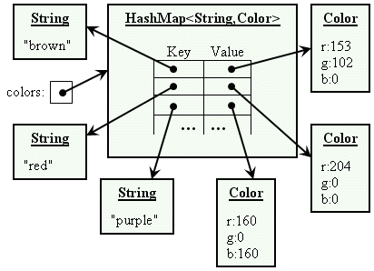

CS203: Programming with Data Structure
Lecture 5 / Sets and Maps
Reading assignment: chapter 21
Lesson Objectives
- To store unordered, nonduplicate elements using a set
- To explore how and when to use HashSet, LinkedHashSet, or TreeSet to store a set of elements.
- To compare the performance of sets and lists
- To tell the differences between Collection and Map and describe when and how to use HashMap, LinkedHashMap, or TreeMap to store values associated with keys
Introduction
A set is an efficient data structure for storing and processing nonduplicate elements. A map is like a dictionary that provides a quick lookup to retrieve a value using a key.
You can create a set using one of its three concrete classes: HashSet, LinkedHashSet, or TreeSet.
HashSet
The HashSet class is a concrete class that implements Set. You can create an empty hash set using its no-arg constructor or create a hash set from an existing collection.
If you construct a HashSet with a set load factor. This determines the capacity of a set before allocating for more space.
public class HashTest {
public static void main(String[] args) {
Set set = new HashSet();
set.add( "john" );
set.add( "mary" );
for (String s : set) {
System.out.println(s);
}
}
}
You can also interrogate a set for information. For example set.size().
LinkedHashSet
LinkedHashSet extends HashSet with a linked-list implementation that supports an order- ing of the elements in the set. The elements in a HashSet are not ordered, but the elements in a LinkedHashSet can be retrieved in the order in which they were inserted into the set.
TreeSet
If you require that access to a set based on a certain range or constraints, you can use TreeSet. For example treeSet.first() and treeSet.last().
Maps
A map is a container object that stores a collection of key/value pairs. It enables fast retrieval, deletion, and updating of the pair through the key. A map stores the values along with the keys. The keys are like indexes.
HashMap
A hash without concerning about the ordering.
LinkedHashMap
A hash without concerning about the ordering.
TreeHashMap
A hash that is efficient when you need traverse in order.
public class hashmap {
public static void main(String[] args) {
Hash hash = new HashMap();
hash.put("john", 20);
}
}
So some of the most practical applications for hash maps include the ability to quickly look things up, e.g. a dictionary or a lookup table.